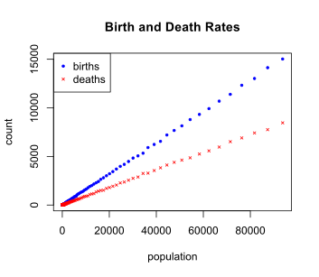
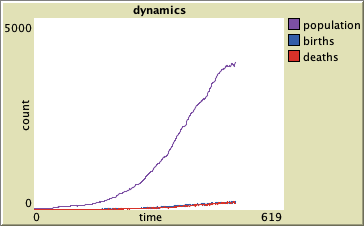

Section 2.1 An Agent Based Motivation for Dynamics
We start our modeling by thinking about an agent-based model. An agent-based model is a computer simulation in which abstract agents are defined on a computer with a collection of rules for what they do in time and how the different agents interact with one another. In the context of a population, we might think of the agents as individuals within a virtual population. The rules describe the patterns of life that the individuals follow.
By first thinking about how we would implement an agent-based model for a system, we are engaging the process of establishing an abstract representation of the fundamental assumptions identified in a hypothesis on how the system develops in time. Generally, we want to minimize the number of rules while still capturing the essence of our hypothesis. Allowing the computer simulation to follow our rules, we can observe the dynamics relatively quickly and make virtual measurements that might guide a more mathematical model.
Subsection 2.1.1 NetLogo Overview

1
ccl.northwestern.edu/netlogo/2
www.gnu.org/licenses/gpl-2.0.htmlRather than explain everything about NetLogo here, I refer you to the excellent documentation on the NetLogo website. There are three useful tutorials to get started: Tutorial 1 (Running Models), Tutorial 2 (On Turtles and Patches), and Tutorial 3 (Building a Model). In addition, the NetLogo Programming Guide explains the structure of how to program and the NetLogo Dictionary summarizes the commands that agents automatically inherit.
3
ccl.northwestern.edu/netlogo/docs/tutorial1.html4
ccl.northwestern.edu/netlogo/docs/tutorial2.html5
ccl.northwestern.edu/netlogo/docs/tutorial3.html6
ccl.northwestern.edu/netlogo/docs/programming.html7
ccl.northwestern.edu/netlogo/docs/dictionary.htmlDemo code associated with this document was written in NetLogo 6. Links are provided to download the full model. Elements of the code will be discussed. Individuals in the population will be modeled as turtle agents (meaning they are movable).
Subsection 2.1.2 Environmentally Naive Births and Deaths
When trying to define rules for how an individual will give birth to new individuals or die, we might consider complicating factors. For example, we might expect that births and death would depend on the health of the individual as well as the state of the environment in which the individual is living. However, the simplest models would not take these into account. The simplest rule for reproduction might be to decide randomly whether or not to give birth at a given cycle (tick) for the system. Similarly, we might have death be decided randomly. The following code fragment is a minimal approach for implementing random birth and death that is naive in regards to the environment.
to attempt-reproduce
;; global 'birth-percent' = percent of cycles
;; in which to reproduce
if random-float 100 < birth-percent [ hatch 1 ]
end
to attempt-survive ;; and failure is to die
;; global 'death-percent' = percent of cycles
;; in which to die
if random-float 100 < death-percent [ die ]
end
If we ran a simulation using these naive rules for reproduction and survival, with every agent randomly deciding whether it will reproduce and whether it will die, we would discover that there is a lot of randomness but that the number of births and deaths seem to be related to the population size. The following graph comes from such a simulation.

birth-percent = 16 and death-percent = 9.This figure illustrates that the larger the population size, the more births and deaths we expect to observe. In fact, because of how the birth and death events were randomly determined based on a percentage of the number of tick cycles for each individual, we would expect that the number of births and deaths are approximately just the corresponding percentage of the total population size. Of course, because the simulation involves random decisions, there are fluctuations above and below that amount.
We might look directly at the relationship between the number of births and deaths with respect to the population size. We can create a plot with points \((P,B)\) where \(P\) is the population and \(B\) is the number of births that came from that population. Similarly, we can create a plot with points \((P,D)\) where \(D\) is the number of deaths occurring with a population \(P\text{.}\) A combined graph is shown below for the simulation that generated the previous dynamics plot.

The plot suggests that the number of births and deaths occurring during each time period is approximately proportional to the population size (i.e., linear graphs passing through \((0,0)\)). In fact, the proportionality constant corresponds to the percent used for birth and deaths in our simulation, with \(B \approx 0.16 P\) and \(D \approx 0.09 P\text{.}\) (For births, this is also dependent on our simulation resulting in only a single birth for every reproduction event.)
Subsection 2.1.3 Density-Dependent Births and Deaths
A more complex rule for population dynamics would include density-dependence. A population does not grow without bound. When the population is crowded, the birth and death rates for individuals change. Competition between individuals might result in fewer resources per individual. Crowded conditions might increase sickness or injuries. Such conditions generally lower the birth rates and increase the death rates for the population.
One simplistic approach to simulate these density-dependent effects in NetLogo would be to identify how many individuals are on a common patch and treat that as the local density. We might then directly increase the percentage of individuals that would die based on this density. This approach captures the idea of density dependence but does not attempt to attribute those changes to actual interactions. More advanced simulations would require directly modeling the environment itself.
In NetLogo, we can have each patch influence all of the agents that belong to the patch. The following code fragments illustrate how such a model might be implemented.
to density-update ;; this is a command for patches
;; create a temporary variable that counts all individuals on patch
let density count turtles-here
;; use that density to compute a variable death percentage for
;; each individual living on the current patch
ask turtles-here [
;; death-percent is "y-intercept"
;; death-increment is "slope"
set local-death-percent (death-percent + death-increment * density)
]
end
to attempt-reproduce
;; global 'birth-percent' = percent that reproduce
if random-float 100 < birth-percent [ hatch 1 ]
end
to attempt-survive ;; and failure is to die
;; 'local-death-percent' = calculated by patches
if random-float 100 < local-death-percent [ die ]
end
to go ;; minimal code of the standard go command
ask patches [
density-update
]
ask turtles [
attempt-reproduce
move ;; not shown
attempt-survive
]
tick
end
The following graph comes from such a simulation using this type of density-dependence.

birth-percent = 16 and death-percent = 9 and death-increment = 0.3.Notice that the population does not grow indefinitely. As the population increases, the death rate increases faster than the birth rate so that the population growth rate ultimately decreases. The population levels out. We say that the population has a carrying capacity, which is the population that the environment can sustain at a steady-state or equilibrium.
An equilibrium occurs when the population does not change. This corresponds to when the birth rate and death rate are in balance. Plotting the birth and death rates with respect to the population size is illustrated in the figure below. The carrying capacity corresponds to where these rates intersect.
Because the population grows according to the difference between the birth rate and the death rate \(B-D\text{,}\) we call this difference the net growth rate \(R\text{.}\) The figure below illustrates a plot of the net growth rate \(R\) with respect to the population size \(P\text{,}\) giving us a new way to think about our data. Notice that the net growth rate increases and then decreases as the population increases. The carrying capacity corresponds to the population size at which the net growth rate returns to \(R=0\text{.}\)
Motivated by dynamics of a population simulated with births and deaths, we will next look at deterministic models for population growth. These simulations included demographic stochasticity, the randomness related to random birth and death events. The models we will be looking at do not include the stochasticity but will represent the average behavior expected for a population.